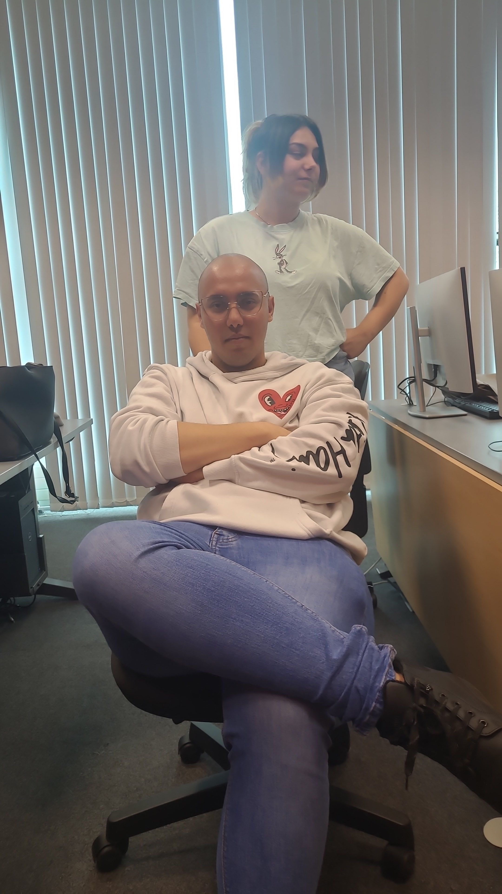

Ivan Iliev
Prime Father"If she wants a ring, she'll need a king (me)"
Inspired by Magnus Hirschfeld, Ivan is a self-proclaimed feminist thought leader who discovered gender equality through an unconventional 12-year dating experiment. His groundbreaking research on interpersonal dynamics continues to inform modern feminism.